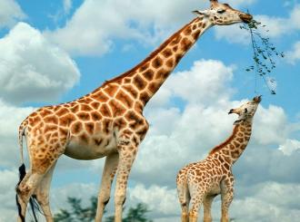
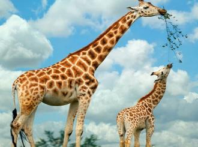

Добро пожаловать на сайт ZOO Zoo~
У жирафов обычно есть пара рогов, которые не сбрасываются всю жизнь, а пестрая сеточка на их коже является естественным защитным цветом. Жирафы любят жить группами, обычно по дюжине или около того живут вместе, иногда до десятков. Жирафы — пугливые и добросердечные животные, при встрече с естественными врагами они тут же убегают. Он может двигаться со скоростью 50 километров в час. Когда он не может убежать, его гигантское молотообразное копыто становится мощным оружием. Жирафы высокие и имеют длинные ноги, а их конечности могут пинать во всех направлениях спереди назад, влево и вправо, с широким диапазоном ударов и большой силой, максимум до 600 килограммов.
Поэтому африканские львы обычно не так легко нападают на взрослых жирафов. Жирафы самые высокие животные в мире.Они стоят высоко и смотрят далеко.У них необыкновенное зрение.Ищите источник звука,и продолжайте есть, пока не определите,что все в порядке.Жирафы любят есть листья на больших деревьев, а также есть некоторые нежные листья растений с влагой.Его язык может вытягиваться более чем на 50 см, и есть листья крайне сложно.Умный и удобный.
 
